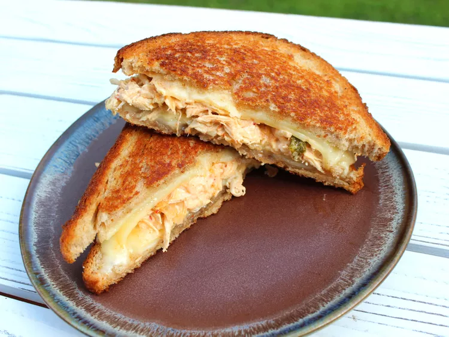

Kimchi Chicken Melt Sandwich

Description
This kimchi chicken melt sandwich feels a little extra—these flavors will bring your taste buds alive. I’ve doubled
the cheese, using both provolone and havarti, and inside the melted cheese is a simple mixture of precooked shredded
chicken, kimchi, and mayonnaise.
Ingredients
- 1/2 cup shredded cooked chicken
- 2 tablespoons kimchi, or to taste
- 2 tablespoons mayonnaise
- 1 tablespoons softened butter
- 2 slices white bread
- 2 slices provolone cheese
- 2 slices havarti cheese
Steps
-
In a small bowl combine shredded chicken, kimchi, and mayonnaise.
-
Preheat a small skillet over medium heat. Spread ½ tablespoon butter on one side of a slice of bread. Place 1
slice bread butter-side-down in skillet; place 1 slice provolone and 1 slice Havarti cheese onto bread.
-
Top with chicken mixture, then with remaining slice provolone and remaining Havarti. Butter second bread slice
with remaining butter on one side and place butter-side-up on top of sandwich.
-
Cook sandwich in skillet until bread is lightly browned and flip over, about 2 ½ minutes per side.